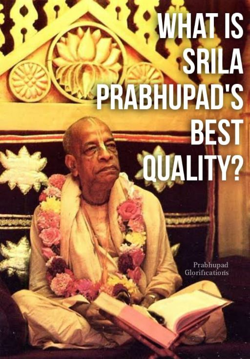

What do you think is Srila Prabhupāda's best quality?

Interviewer : What do you think is Srila Prabhupāda's best quality?
Gour Govinda Swami : Prabhupāda is a pure vaishnava. All vaishnava qualities mentioned in sastra are in him,
kṛpālu, akṛta-droha, satya-sāra sama
nidoṣa, vadānya, mṛdu, śuci, akiñcana
sarvopakāraka, śānta, kṛṣṇaika-śaraṇa
akāma, anīha, sthira, vijita-ṣaḍ-guṇa
mita-bhuk, apramatta, mānada, amānī
gambhīra, karuṇa, maitra, kavi, dakṣa, maunī
“Devotees are always merciful, humble, truthful, equal to all, faultless, magnanimous, mild and clean. They are without material possessions, and they perform welfare work for everyone. They are peaceful, surrendered to Kṛṣṇa and desireless. They are indifferent to material acquisitions and are fixed in devotional service. They completely control the six bad qualities — lust, anger, greed and so forth. They eat only as much as required, and they are not inebriated. They are respectful, grave, compassionate and without false prestige. They are friendly, poetic, expert and silent.”
(CC, madhya 22.77-80)
Srila Prabhupada's heart was bleeding to see the suffering of the jivas. Therefore he came down from Krsna's abode and traveled all over the world to save the fallen souls.
~ Admin